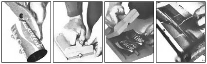

STAFF PHOTOS
To make grooved collector pieces from soda, soup?or even motor oil-cans, assemble a fin press (as shown in the below diagram) and follow the four-step construction sequence shown above. [1] Slice open a ""beheaded"" tin cylinder and trim the metal to size. [2] Place the sheet between your fin shaper's cap and base ... and press! [3] Then simply pull out the grooved metal, and ... [4] solder the finished fin to your copper collector pipe.